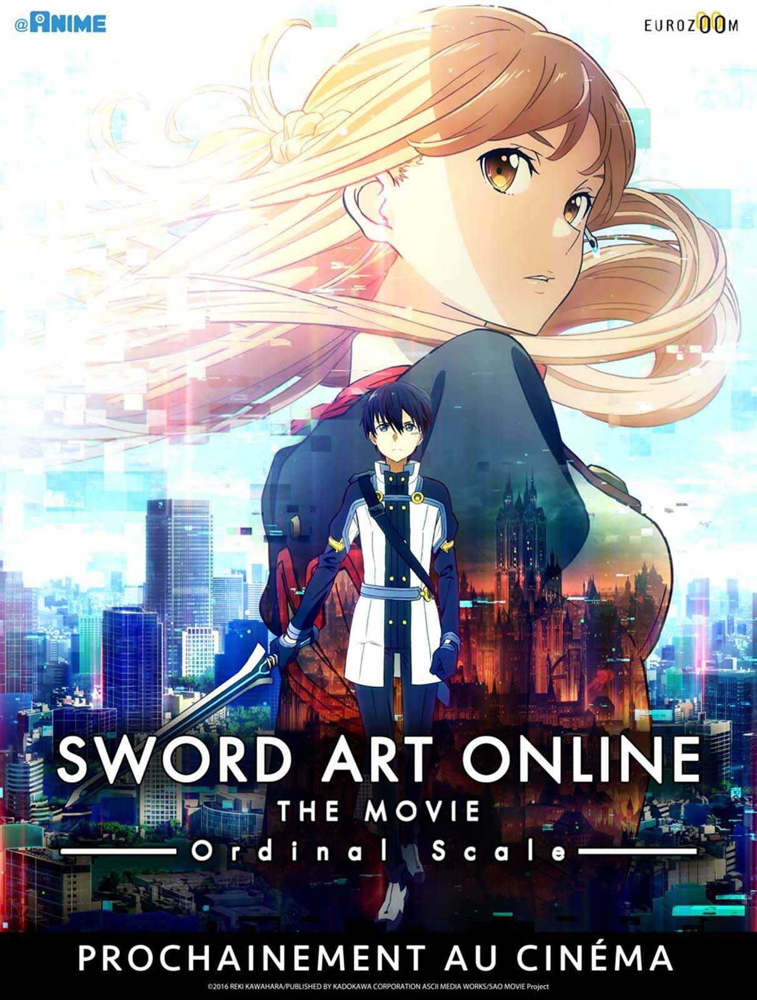
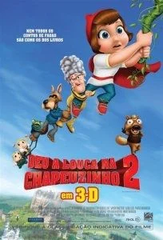
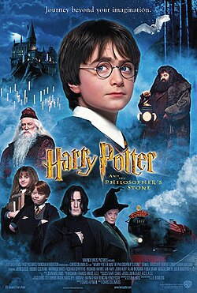
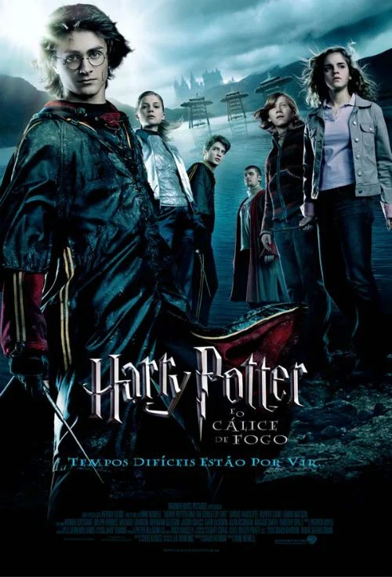

Sword art Online: Ordinal scale
O filme Sword Art Online The Movie: Ordinal Scale se passa em 2026, quatro anos após o incidente original de SAO, e acompanha Kirito e seus amigos em um novo jogo de realidade aumentada chamado Ordinal Scale que esconde perigos reais
Em Demon Slayer: Kimetsu no Yaiba – Castelo Infinito, Tanjiro e os Hashira vão até a base do líder do Esquadrão de Caçadores para protegê-lo, mas são sugados por Muzan Kibutsuji para dentro de um espaço misterioso.

Em Deu a Louca na Chapeuzinho 2, Chapeuzinho Vermelho treina com um grupo secreto chamado Irmãs do Capuz enquanto o Lobo Mau, a Vovózinha e o esquilo Ligeirinho investigam o sumiço de João e Maria

Harry Potter e a Pedra Filosofal acompanha a história de um garoto órfão que descobre ser um bruxo aos 11 anos e é convidado para estudar na Escola de Magia e Bruxaria de Hogwarts

Harry Potter e o Cálice de Fogo é o quarto volume da saga escrita por J. K. Rowling e acompanha o quarto ano de Harry na Escola de Magia e Bruxaria de Hogwarts.